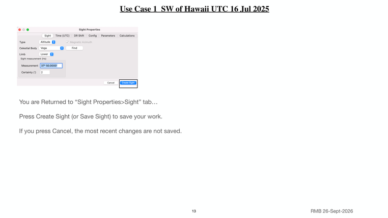

Previous | Contents | Next

Use Case 1 SW of Hawaii UTC 16 Jul 2025
You are Returned to “Sight Properties>Sight” tab…
Press Create Sight (or Save Sight) to save your work.
If you press Cancel, the most recent changes are not saved.
13 RMB 26-Sept-2026